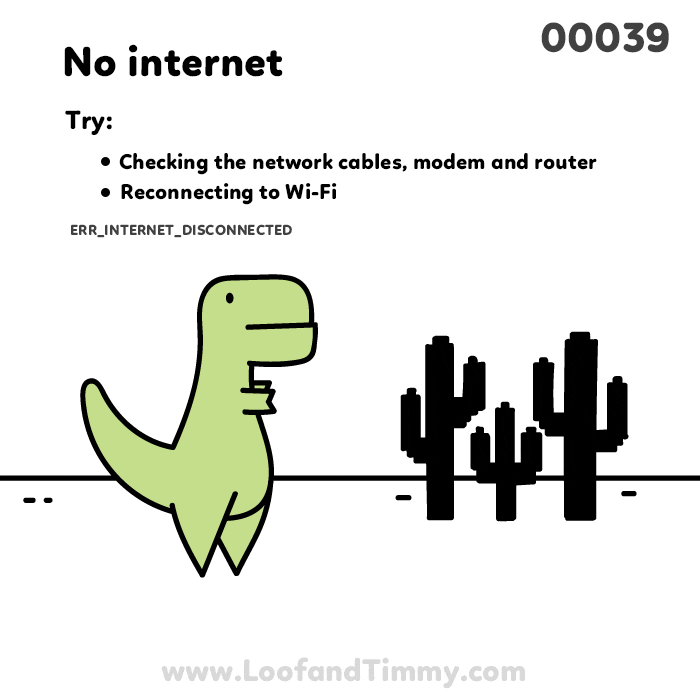

| Governança da Internet: o papel de ICANN, LACNIC, Nic.br e Registro.br |
A Internet, como rede global, depende de uma estrutura organizada para funcionar de forma eficiente e segura. Nesse contexto, órgãos como ICANN, LACNIC, Nic.br e Registro.br desempenham papéis fundamentais. A ICANN foi criada em 1998 para coordenar o sistema de nomes de domínio (DNS) e a alocação de endereços IP globalmente, garantindo a estabilidade e a universalidade da rede. O Lacnic surgiu para gerenciar esses recursos na América Latina e Caribe, adaptando-se às necessidades regionais. No Brasil, o Nic.br foi estabelecido para implementar políticas definidas pelo CGI.br, supervisionando a infraestrutura de internet, enquanto o Registro.br, vinculado ao Nic.br, foi criado para administrar os domínios .br, fortalecendo a identidade digital nacional. Esses órgãos existem para assegurar uma governança colaborativa e descentralizada, promovendo acessibilidade, segurança e equidade no uso da internet, além de evitar conflitos técnicos e facilitar a expansão contínua da rede em escala global e local.
